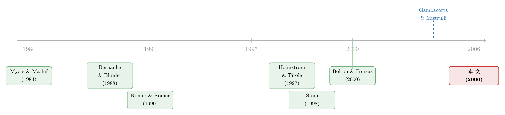

银行不缺钱，却放不出款——一条藏在「股本」里的货币政策暗线
本文读的是 Bolton & Freixas (2006, Review of Financial Studies)：他们搭了一个把银行贷款与证券市场放在同一个一般均衡里的模型，论证货币政策影响银行信贷，靠的不是改变银行的准备金或流动性，而是改变「银行贷款相对公司债的利差」，进而同时改写企业的融资结构与银行的股本基础。更狠的一步是，由于股本融资存在信息稀释成本，模型生出了多重均衡，其中一个就是活脱脱的「信贷紧缩」。
1 一个让「货币观」尴尬的问题
先从一个老问题说起。央行收紧货币，经济为什么会降温？
教科书里最干净的答案是所谓的「货币观」(money view)：央行通过公开市场操作抬高利率，利率一高，投资、消费、储蓄随之调整，总需求下来了。在这套逻辑里，银行贷款和公司债是完全替代品——企业从哪儿借钱无所谓，反正都盯着同一条利率。银行只是一个透明的管道。
但现实里有个让人不舒服的观察：货币紧缩时，企业的融资结构会变。大企业掉头去发商业票据，而那些离不开银行的企业则被晾在一边。于是有了「信贷观」(credit view)——货币政策还有一条额外的通道，是顺着银行信贷供给走的 [Bernanke and Blinder (1988, 1992)]。
可信贷观一直背着一个软肋：它得假设银行贷款和债券不能轻易互替、银行的可准备金负债（存款）和不可准备金负债（发债）也不能互替。这两个「不能」是外生塞进去的。一旦像 Romer and Romer (1990) 那样反问一句——「要是银行能随时去市场上发债融资，那货币政策不就只剩利率这一条路了吗？」——信贷观的地基就开始松动。
接着，一个自然的问题是：能不能不靠「准备金—存款」那条老通道，而从一个更微观、更难反驳的地方，把信贷通道重新立起来？
这正是 Bolton 和 Freixas 要做的事。他们的回答出人意料地简单又锋利：问题不在银行的流动性，而在银行的股本（equity capital）。
2 核心直觉：贵的不是钱，是「股本」
把这篇论文的一句话拎出来，就是——
银行之所以放不出更多贷款，不是因为它没钱（存款、发债它都能随便拿），而是因为股本太贵。而股本为什么贵？因为巴塞尔式的资本充足率监管，逼着银行的贷款必须由一定比例的股本垫底；偏偏增发股本又会触发 Myers-Majluf (1984) 那套信息稀释成本。两头一夹，股本就成了银行最稀缺、最昂贵的那块资源。
于是整篇文章其实只在反复讲透一件事：货币政策怎样通过「银行贷款 vs 公司债」的利差，一手拨动企业的融资结构，一手拨动银行的股本基础，最终拨动整个经济的信贷总量。
我们把这条链条一段段拆开。
3 模型设定：一个种麦子的经济
这是一篇纯理论文章，所以值得把模型一步步搭清楚。整个经济只有一种消费/生产品，可以想象成麦子。货币政策通过公开市场操作（政府发债 G）来影响政府短债利率 R_G——文章不显式刻画名义面，只保留这个真实利率。经济里有三类玩家。
(1) 企业。 每家企业有一个项目，t=0 时需要投入 I>1。成功时产出 V>I；失败时，只要能被重组，还能榨出残值 v；若失败又无法重组，项目价值归零。企业主自有财富 W<I，必须从外部融入 I−W=1。关键在于：企业的成功概率 p 是可观测的，且在 [0,1] 上均匀分布。企业只能二选一：发债，或借银行贷款（不许发股、不许混用）。两种工具的差别只有一处——
- 债券：约定
t=1还款R(p)。还不上就破产清算，不能重组（债权人太分散，谈不拢）。 - 银行贷款：约定还款
Rb(p)。一旦失败违约，银行能介入重组，攫取至多v的残值。
(2) 家庭。 一个 [0,1] 连续统，效用 \(U(C_1,C_2)=\log(1+C_1)+\log(1+C_2)\)，每人禀赋一单位。在给定毛真实利率 R_G 下，家庭解
$$ \max_{C_1,C_2}\; \log(1+C_1)+\log(1+C_2)\quad \text{s.t.}\quad C_1+\frac{C_2}{R_G}=1 $$
一阶条件给出最优储蓄
$$ s^{*}=1-C_1=1-\frac{1}{2R_G}. $$
直觉很顺：利率 R_G 越高，今天越值得省，储蓄越多。储蓄可以去存款、买债、买政府债、或买银行股。存款与金融资产完全可替代，于是无套利逼出 R_G = R_D——往后我们就用 R_G 同时表示政府债利率和存款利率。再加上债券这一边的无套利条件：
$$ pR(p)=R_G. \tag{1} $$
也就是债券的期望偿付恰好等于无风险利率——风险被分散掉了，债主只要拿到 R_G 就满意。
(3) 银行。 银行也由自利的经理人经营，经理人投入自有财富 w。银行有两种活法。小打小闹：只拿自有资本 w 去撬动（受保险的）存款 D，放贷 w+D，但受资本充足率约束
$$ \frac{w}{w+D}\;\ge\;\gamma>0\qquad(\gamma=0.08). $$
或者做大：增发外部股本 E，放贷能力从 w/\gamma 扩到 (w+E)/\gamma。代价是增发要承担信息稀释成本——这是全文的关节，下一节细讲。银行完全分散化，违约概率为零；每笔业务有单位运营成本 c>0。
4 第一根暗线：利差怎样切开企业的融资版图
先看银行的定价。在混同均衡里，H-banks（好银行）对每一笔贷款报价 Rb(p)，使每笔贷款的期望超额回报相等——否则它只挑利差最高的放，不是最优。这个每笔贷款相对政府债的期望净超额回报，记作 μ_H：
这就是论文的式 (2)。对照之下，坏银行（L-bank）每笔贷款的期望回报只有 p Rb(p)+(1−p)θv−R_G（式 3），因为它只能榨出 θv（0<θ<1）。同样的报价，好银行赚得更多——这一点之后会反过来咬住股本市场。
现在做一件关键的事：让企业自己选。一家成功概率为 p 的企业，比较两条路。
走债券：成功（概率 p）时拿到 V−R(p)，失败时清算归零。由式 (1)，R(p)=R_G/p，于是期望收益
$$ p\big(V-R(p)\big)=pV-R_G. $$
走银行：成功时拿 V−Rb(p)，失败时银行拿走全部残值、企业仍归零。由式 (2)，p Rb(p)=R_G+\mu_H-(1-p)v，于是期望收益
$$ pV-p\,Rb(p)=pV-R_G-\mu_H+(1-p)v. $$
两者一减，银行减债券：
$$ \underbrace{(1-p)v}_{\text{重组的价值}}\;-\;\underbrace{\mu_H}_{\text{中介的代价}}. $$
（公式里只放符号，含义在这儿说：第一项是失败时银行能救回的那块残值带来的好处，第二项是为这份「灵活性」付出的利差。）于是企业偏好银行，当且仅当 (1−p)v>μ_H，即
$$
p 漂亮的分割出现了：所有 到这里，第一根暗线已经铺好： 但融资结构只是半个故事。真正让这篇文章与众不同的，是它把银行股本的成本内生化了。 机制来自 Myers and Majluf (1984)。银行经理分两种：好（H）能从重组里榨出 为什么经理人会在意被低估？因为他可能要在 $$
\max\big[q,\;\varphi q+(1-\varphi)\pi_2\big].
$$ 如果他经营的是 L-bank 且私下知道 把银行的选择写全，它在给定利差 $$
\max_{L,\,G_b}\;\Big\{\,L\big(R_G+\mu_H-c\big)+\big[G_b-D(R_G)\big]R_G\,\Big\}
$$ $$
\text{s.t.}\quad L+G_b=D(R_G)+w+E,\qquad L\le \frac{w+E}{\gamma}.
$$ 第一个约束是资产负债恒等式，第二个就是资本充足率——它把放贷能力死死焊在股本 这就埋下了全文最反直觉的一颗雷：因为股本的成本由「市场对银行价值的信念」内生决定，而信念可以自我实现，模型于是允许多重均衡。 怎么理解这个多重性？想象市场处在一个「低股本」的状态：此时任何一家银行单独去增发，都会被解读成「它缺钱了」的坏信号，股价应声而跌，于是没人敢发——低股本被自己锁死。反过来，在一个「大家都在扩股本」的状态里，谁不扩反而成了坏信号，于是人人都扩。两种信念，两种均衡： 更要命的是滞后性 (hysteresis)：一旦经济掉进信贷紧缩这个低效均衡，光靠小幅调整利率拉不出来，得有一次足够大的利率变动才能扳动市场信念。经济可能就这么卡在坏均衡里。 现在该收网了。货币政策怎么进来？答案是：通过 第一，组合效应。 Berger and Udell (1992) 早就发现一个经验规律：商业贷款相对国债的利差，是国债利率的减函数——利率越高，利差越低。本模型恰好复现了这一点。于是货币紧缩抬高 第二，股本效应（这才是放大器）。 论文的命题 4 指出，货币紧缩压低了银行盈利，于是银行减少股本增发，放贷能力的天花板被压低，信贷总量真正下来了。而当利差被压到一个临界低位时，维持「高股本」已不划算——高股本、高信贷的好均衡不再可持续，经济只能滑向信贷紧缩均衡。叠加滞后性，一次紧缩就可能把经济永久性地推进低效区间，直到一次大的利率反转才能救回。 这就是为什么作者说，在他们的模型里，货币政策对总投资的影响「比其它银行贷款渠道模型都更复杂」：紧缩既照常抬高利率，又压低银行利差，两者合力，一边减证券发行、一边改善贷款风险构成、一边掐紧股本与总信贷。 实证上，这套预测是站得住的。用意大利银行一份极细的数据，Gambacorta and Mistrulli (2004) 发现，银行对货币政策的放贷反应差异，确实与它们的股本约束差异挂钩——这正是一个「银行资本渠道」的证据。（关于「多发股本是否一定意味着少放贷」这个常被误解的命题，另一条用存款利率把它掰回来的思路，可参见《多发股本，银行就一定少放贷吗？》。） 把这条线索放回历史里看，它的位置就清楚了。 最早，Bernanke and Blinder (1988) 立起「货币观 vs 信贷观」的二分，主张除了利率，还有一条顺着银行信贷供给的通道。但这条通道的微观地基长期是外生假设。Romer and Romer (1990) 的诘问——银行若能自由发债，信贷通道还剩什么——逼着后来者去寻找更扎实的摩擦：Stein (1998) 用「银行对自身净值有私人信息」论证非存款负债无法完美替代存款。 与此同时，银行微观经济学这一支在打磨「银行资本为什么贵」：从 Myers and Majluf (1984) 的信息稀释成本出发，到 Holmstrom and Tirole (1997) 把银行资本写进可贷资金与实体部门的均衡。本文的直接前身，是两位作者自己的 Bolton and Freixas (2000)——那篇把股、债、银行债的资本结构选择放进一个非对称信息均衡，但中介成本是外生的。  本文真正的位置，就在这里：它把前人外生给定的「银行资本成本」内生化，让它由市场信念自我实现，从而第一次在一个同时容纳银行贷款与证券市场的一般均衡里，长出了多重均衡与信贷紧缩，并把货币政策的传导，从「准备金/流动性」彻底挪到了「股本」这条暗线上。最后再由 Gambacorta and Mistrulli (2004) 在意大利数据里给它背书。 Q：这跟传统的「银行贷款渠道」到底差在哪？ 传统渠道（如 Kashyap-Stein 一脉）靠的是「准备金—存款」摩擦：央行动准备金，银行的可贷资金跟着变。本文明确绕开了这条路——即便银行能完美进入 CD 或债券市场，只要股本市场存在 Myers-Majluf 式稀释成本，信贷通道照样成立。换言之，它把通道从负债端的「流动性」搬到了权益端的「股本」。 Q：为什么货币紧缩会让银行利差「下降」而不是上升？这听起来很反直觉。 关键在无套利。债券那边 Q：股本不变时贷款总量也不变，那「信贷渠道」岂不是被自己否定了？ 不矛盾，这正是文章的精巧处：在短期、股本给定时，货币政策只改变贷款的构成（谁被挤出），总量不动；只有当它进一步压低银行盈利、抑制股本增发时，总量才下来。两个时间尺度上的效应是分开的。 Q：多重均衡是不是「想要什么结论就能调出什么结论」的把戏？ 多重均衡确实削弱了可证伪性，这是这类模型的通病。但它的价值在于提供了一个机制性的「信贷紧缩」定义：低股本、低信贷、高利差，且具滞后性。它把「为什么一次冲击会留下持久伤疤」这件事，归到了可自我实现的市场信念上，而不是黑箱式的外生冲击。 Q：模型假设企业只能在债和银行贷款里二选一，还不许发股，这会不会太强？ 是个简化，作者自己也承认。但它服务于核心：把融资版图压缩成一条由 Q：好银行被低估，为什么不干脆用「分离均衡」发信号把自己摘出来？ 论文证明（命题 3 一带）在这个设定下只存在混同或半分离均衡——好银行无法以可置信的方式把自己和坏银行分开。正因为分不开，稀释成本才挥之不去，股本才始终是贵的。 1. 把「股本渠道」搬到公司债市场做实证。
【经济故事】模型预言货币紧缩会改善银行贷款的风险构成、把最危险的企业挤向（或挤出）债券市场。这是一个可检验的横截面预测：紧缩期，边际高风险发行人在「银行 vs 债券」之间的迁移方向。
【可行性】中。需要把企业层面的融资工具选择（贷款 vs 债券）与企业信用质量、货币政策冲击对齐。数据上可用 DealScan（银团贷款）＋ Mergent FISD（公司债）＋企业评级，识别可借助高频货币政策冲击。难点在于干净地度量「边际企业」的迁移。 2. 用银行股本约束的横截面，识别「构成效应」与「总量效应」的分离。
【经济故事】本文区分了两种时间尺度：股本给定时只动构成、股本可调时才动总量。若能找到银行股本约束松紧的外生差异，应能看到「约束紧的银行，其客户的融资构成对货币政策更敏感」。
【可行性】中高。沿 Gambacorta-Mistrulli 的思路，用银行资本充足率的横截面 ＋ 监管冲击（如巴塞尔过渡期）作识别，配合贷款层面数据（如征信登记）。这条路相对 doable，因为银行资本数据可得性好。 3. 外资持有人会缓和还是加剧「信贷紧缩均衡」？
【经济故事】多重均衡的根源是本国市场对银行价值的悲观信念可自我实现。若银行股本基础里有相当比例的外资持有人，他们的信念形成机制不同，可能打破滞后性、把经济拉出坏均衡——也可能在危机中率先撤离、加深紧缩。
【可行性】低到中。需要银行股权的外资持有人结构（如 FactSet/Orbis 的持股穿透）＋ 信贷供给数据，识别上要处理外资进入的内生性。理论上有意思，但干净的外生变异不易找。 4. 把「重组灵活性」的价值随信用周期变化写进去。
【经济故事】本文里残值 p<p* 的高风险企业去借银行贷款，所有 p>p* 的低风险企业去发债。直觉无比顺畅——越容易失败的企业，越看重「失败了还能被重组」这份保险，越愿意为银行的灵活性买单；而安全的企业用不着这份贵保险，直接发债更划算。（这套「债、债券、银行债」如何从一个统一的资本结构问题里长出来，正是两位作者上一篇论文的主题，可参见《央行没买你的债，你却也跟着发了债——一条「资本结构」的货币政策暗线》。）p* 是一道由利差 μ_H 决定的分界线。利差一动，分界线就移，企业的融资版图随之重画。5 第二根暗线：股本为什么贵，以及「信贷紧缩」从哪冒出来
v，坏（L）只能榨出 θv。外部投资者看不出类型，只知道任一家银行是 L 的概率为 λ、是 H 的概率为 1−λ。于是当银行增发股本时，市场会按平均质量定价，系统性地低估好银行。可偏偏是好银行在主导「要不要增发」这个决策——结果就是，信息不对称把所有银行的增发量，相对完全信息下的最优，整体压低了。股本因此有了一个内生的成本，并顺着资本充足率约束，传导成一个内生的贷款成本。t=1 提前套现。设经理以概率 φ∈(0,1) 需要在 t=1 卖出持股，q 为股价、π₂ 为 t=2 的累计利润，经理的目标是π₂<q，他一定在 t=1 卖出、只在乎股价；如果是 H-bank 且 π₂>q，他会去最大化 φq+(1−φ)π₂。这套结构让好银行「不愿贱卖」，坏银行「乐于搭便车」，正是稀释成本的来源。μ_H 与利率 R_G 下，选贷款 L 和政府债持有 G_b，解w+E 上。只要股本不变，贷款总量的天花板就不变。
6 把两根暗线接上货币政策
R_G 同时拨动 μ_H 和 E。R_G、压低利差 μ_H，分界线 p*=1−μ_H/v 随之上移：一批原本发债的、相对安全的边际企业，掉头来借银行贷款。可银行的放贷能力被股本焊死，于是为了腾地方，最危险的那批企业被「挤出」了银行信贷市场。结果是——证券发行减少、银行贷款的风险构成改善，而只要股本不变，贷款总量纹丝不动。这是一个货币观完全看不见的再配置。7 文献脉络
8 评论与延伸（Q&A + 研究方向）
(a) 几个可能的疑问
pR(p)=R_G 把债券回报钉死在 R_G；而银行利差 μ_H 反映的是「重组灵活性」这份服务的稀缺租金。R_G 抬高时，债券融资的相对吸引力变化，使银行得压低利差才能维持其客户群，于是 μ_H 随 R_G 上升而下降——这恰好对上了 Berger-Udell (1992) 观察到的商业贷款利率「黏性」。
p* 切分的直线，才好讲清「利差移动→分界线移动→构成改变」。作者指出，在 Bolton-Freixas (2000) 那个现金流结构更丰富的设定里，混用和发股是被允许的。
(b) 几个可能的研究问题与提案
v 是常数。但失败企业的可重组价值在繁荣与衰退里天差地别，这会让分界线 p* 随周期内生漂移，可能放大货币政策在衰退期的传导。
【可行性】中。理论扩展直接；实证检验可用违约回收率（如 Moody's URD）随周期的变动，去校准 v 的周期性，再看银行—债券构成的周期敏感度。参考文献